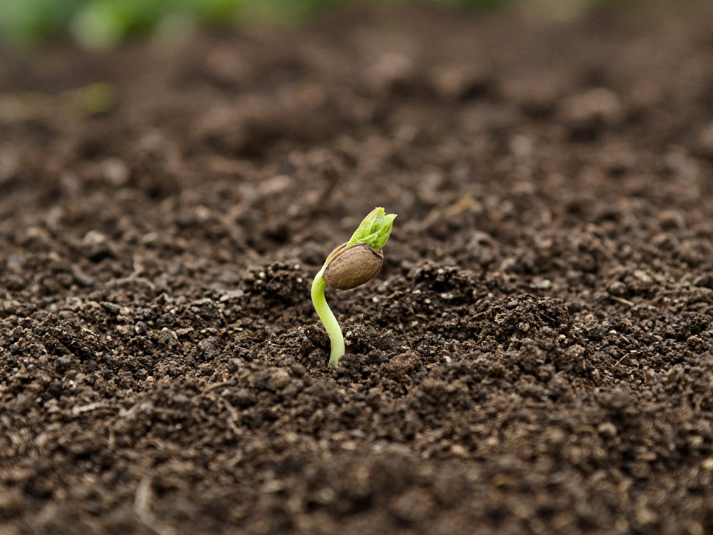
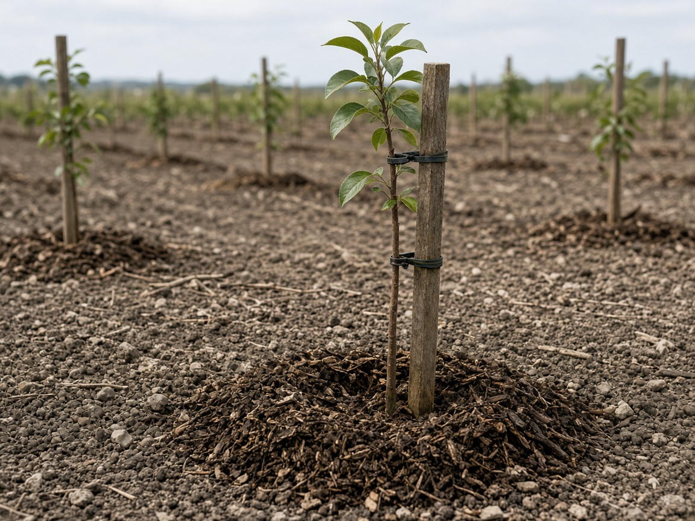
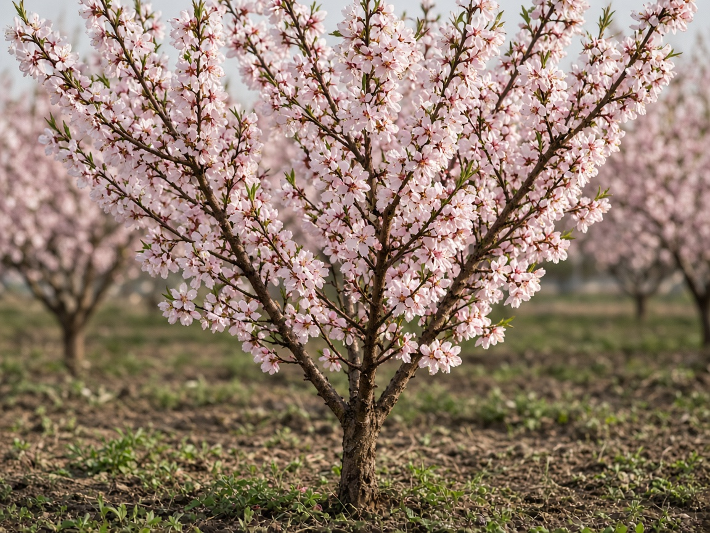
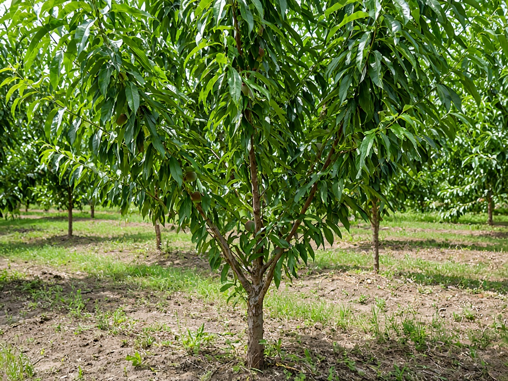
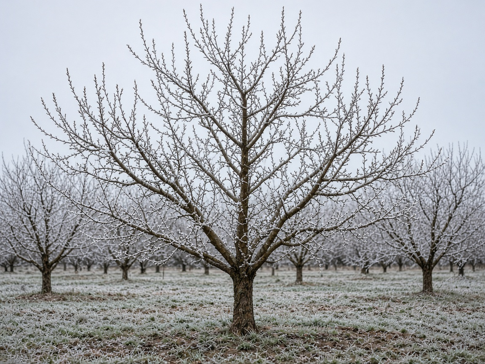

2023 · Seed
The milestone begins as a tagged peach seed in the farm nursery — first photo on the bench.

Demo timeline
One peach tree at Willow Creek Farm · 18 miles away · Followed from seed through the seasons.
Mock data Same peach tree, year by year — each step shares the same layout and photo size.
The milestone begins as a tagged peach seed in the farm nursery — first photo on the bench.

Young peach sapling staked and mulched in its farm row — labeled for Maya’s first birthday.

Blossom season. Soft pink flowers on the same peach tree — pollination notes from the farm.

Full green canopy. Irrigation and light prune logged for the growing season.

Fruit set and color. Pick-your-share weekend — or donate peaches to the farm and community.

Dormancy and frost. The tree rests until the next bloom cycle.
